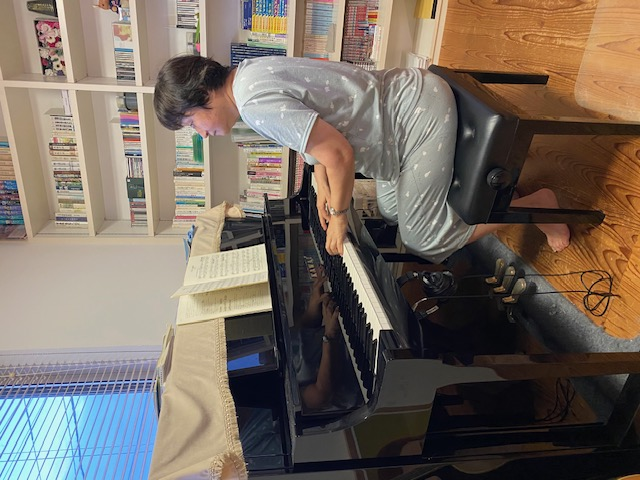

徳島市の個人レッスン・子どもから大人まで
谷中ピアノ音楽教室は、基礎から楽しく学べる個人レッスンの教室です。
幼児からシニアの方まで個性を大切に丁寧に指導いたします。専門的に学びたい方はもちろん、60代で初心者の方や、音楽が苦手なお子さんも指導しています。
谷中 亨子（たになかきょうこ）
音楽がそれぞれの人生の彩りの一つとなるお手伝いができればと思っています。

回数・時間などは御相談に応じます。
入会金はありません。
〒770-0804 徳島県徳島市中吉野町4丁目19-2
電話：088-635-6794
気軽にお問い合わせください。